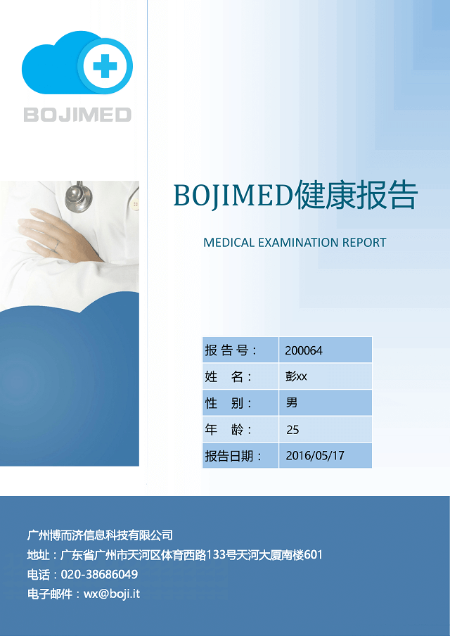

判断标准及建议内容经广东临床医师协会审核
第1页
判断标准及建议内容经广东临床医师协会审核
第1页
尊敬的彭XX先生：
您好！
感谢您对我们的信任和支持。现将您健康报告呈上，希望能为维护您 的健康提供参考。
报告阅读说明：
您本次健康报告由健康信息、健康检测主要指标汇总及专家指导建议 和健康知识等部分组成。
判断标准及建议内容经广东临床医师协会审核
第2页
健康检测数据是您在使用健康检测设备时所采集到的结果，不能覆盖 人体全部器官及全部指标。而且与您所使用的健康设备类型和使用方式、 使用频率有很大关系，所以这些数据仅能部分反应您的健康状况。可以作 为参考，但不具有诊断意义。
本健康报告由广东临床医师协会审核，但由于健康数据数量较少，且 缺乏诊断意义，故本报告仅能大致反应您近期健康状况，不能取代临床医 学报告。如您有不适症状，请务必及时到医院就诊。
判断标准及建议内容经广东临床医师协会审核
第3页
| 检查项目 | 提示 | 结果 | 单位 | 正常参考值 | |
|---|---|---|---|---|---|
| 身高 | 170 | cm | |||
| 体重 | 90 | kg | |||
| 体重指数 | ↑ | 31 | Kg/m2 | 18.5-23.9 | |
| 运动量 | 10001 | 步 | 10000 | ||
| 睡眠质量 |
| 类别 | 有无 | 时间 | 详情 | ||
|---|---|---|---|---|---|
| 饮酒史 | 有 | 4年 | 每月2次 | ||
| 吸烟史 | 无 | ||||
| 过敏史 | 无 |
判断标准及建议内容经广东临床医师协会审核
第4页
| 疾病种类 | 有无 | 严重程度 | 有无就诊 | 控制方法 | |
|---|---|---|---|---|---|
| 高血压 | 无 | ||||
| 哮喘病 | 无 | ||||
| 冠心病 | 无 | ||||
| 糖尿病 | 无 |
| 疾病种类 | 有无 | 疾病种类 | 有无 | 疾病种类 | 有无 |
|---|---|---|---|---|---|
| 高血压 | 有 | ||||
| 哮喘病 | 无 | ||||
| 冠心病 | 有 | ||||
| 糖尿病 | 有 |
判断标准及建议内容经广东临床医师协会审核
第5页
| 检测时间 | 提示 | 检测结果 | 单位 | |
|---|---|---|---|---|
| 舒张压 | 收缩压 | |||
| 2016-4-17 9:12 | 80 | 120 | mmHg | |
| 2016-4-17 9:14 | 80 | 121 | mmHg | |
| 2016-4-17 9:27 | 81 | 122 | mmHg | |
| 2016-4-17 9:32 | 83 | 124 | mmHg | |
| 2016-4-17 9:36 | 83 | 121 | mmHg | |
| 2016-4-17 9:44 | ↑ | 93 | 122 | mmHg |
| 2016-4-17 10:30 | 83 | 123 | mmHg | |
判断标准及建议内容经广东临床医师协会审核
第6页
高血压小知识：酸奶有助于缓解高血压症状
一项最新研究表明：规律性食用益生菌有助于缓解高血压症状，而这些益生菌可通过日常饮用 某些酸奶或营养品补充获得。这篇论文7月21日在线发表在《高血压》（Hypertension）杂志上。
研究者对9项针对益生菌与血压升高的随机对照研究数据进行了系统性回顾分析，共涉及543名 血压正常或出现血压升高症状的成人受试者。分析结果发现，食用益生菌的人群与对照组比较，平 均收缩压和舒张压分别降低了3.6和2.4mmHg。而且，益生菌的保护效果对基线高血压的人群（血 压高于130/85mmHg) 最为显著。补充多种益生菌的降压效果比补充单一细菌更为出色（收缩压降 幅为5.8mmHg)。
判断标准及建议内容经广东临床医师协会审核
第7页
| 检测时间 | 提示 | 检测结果 | 单位 | 正常下限 | 正常上限 |
|---|---|---|---|---|---|
| 2016-4-17 15:17 | 3.64 | mmol/L | 3.9 | 6.1 | |
| 2016-4-17 15:19 | 5.51 | mmol/L | 3.9 | 6.1 | |
| 2016-4-17 15:27 | 4.25 | mmol/L | 3.9 | 6.1 | |
| 2016-4-17 15:33 | 4.92 | mmol/L | 3.9 | 6.1 | |
| 2016-4-17 15:36 | 6.1 | mmol/L | 3.9 | 6.1 |
血糖小知识：苦瓜降血糖？没有听起来那么好
判断标准及建议内容经广东临床医师协会审核
第8页
苦瓜在民间曾长期被当做一种药材，民间流传着很多关于苦瓜功效的说法。目前 比较常见的一种说法是苦瓜能降血糖，市面上也能看到一些宣称可以“辅助降血 糖”的苦瓜胶囊。那到底事实上是不是这样呢？
在2007年，唯一一个高质量的有关苦瓜降血糖的临床研究在菲律宾总医院完 成。该研究中采用了随机、双盲法，并设置了安慰剂对照组，研究对象是40名成年 糖尿病患者。被试需要在每次用餐后，服下含1克苦瓜提取物的胶囊。结果发现，在 坚持服用3个月后，被试糖化血红蛋白水平（这一指标常作为一段时间内，平均血浆 葡萄糖浓度的参考标准）与安慰剂组无明显差别。
目前，关于苦瓜对于降低血糖究竟能起到多大作用还没有定论。糖尿病患者应该 对类似的说法保持谨慎，严格遵循医嘱服药和控制血糖，不要轻易相信网上或民间 流传的偏方
判断标准及建议内容经广东临床医师协会审核
第9页
| 检测时间 | 提示 | 检测结果 | 单位 | 正常下限 | 正常上限 |
|---|---|---|---|---|---|
| 2016-4-17 17:12 | ↓ | 93 | % | 95 | 99 |
| 2016-4-17 17:14 | ↓ | 91 | % | 95 | 99 |
| 2016-4-17 17:17 | ↓ | 92 | % | 95 | 99 |
| 2016-4-17 17:33 | 95 | % | 95 | 99 | |
| 2016-4-17 17:36 | 95 | % | 95 | 99 | |
| 2016-4-17 17:44 | 96 | % | 95 | 99 |
血氧小知识：富氧水创造新的补氧方式
判断标准及建议内容经广东临床医师协会审核
第10页
据专家介绍，人体每天消耗的氧气量大约是600g，以往我们都在靠呼吸补氧，现在，你还可以喝富氧水 来补氧。当我们缺氧时，畅饮一瓶高氧含量的富氧水，即可通过消化道粘膜渗透方式吸收水中的高浓度氧 气，达到高效、简便、无毒副作用的补氧。
为什么喝富氧水就能补氧？德国科学家瓦尔堡因为对“呼吸酶作用本质和方式的发现”做出重要贡献而 荣获1931年的诺贝尔医学奖。针对瓦尔堡教授的研究成果，越来越多的人开始对氧气在消化系统是否能被吸 收进行研究。德国Pakdaman 博士是世界知名的富氧水研究专家，最早提出了富氧水和口服氧气疗法，其利 用同位素O215追踪技术研究证实富氧水中的氧通过消化道可以被消化道粘膜吸收及利用，一般在饮用富氧 水大约5分钟后即开始补氧的效果，其作用可以持续3-4小时。
判断标准及建议内容经广东临床医师协会审核
第11页
| 检测时间 | 提示 | 检测结果 | 单位 | 正常下限 | 正常上限 |
|---|---|---|---|---|---|
| 2016-4-17 17:22 | 36.1 | °C | 36 | 37.5 | |
| 2016-4-17 17:27 | 36.3 | °C | 36 | 37.5 | |
| 2016-4-17 17:33 | 36.6 | °C | 36 | 37.5 | |
| 2016-4-17 17:39 | 36.3 | °C | 36 | 37.5 |
判断标准及建议内容经广东临床医师协会审核
第12页
体温小知识：婴儿发烧，该不该去医院？
如果你的孩子不到三个月，只要体温高于38度，就应该去医院。因为在这个年龄阶段，尤其是 新生儿期间（0~28天），10%以上的发烧是严重感染所致，比如菌血症、脑膜炎、肺炎等，而新生 儿的免疫系统又很不完善，容易导致严重后果，美国的指南建议医生将发烧的新生儿收住院治疗。 1~3个月大的孩子的发烧，很大部分是自限性的病毒感染引起，但也有较大比例是细菌感染所致。 同样因为孩子小不安全，鉴别起来很难，医生需要做些检查才能将风险较低的那部分孩子筛查出 来，家长自己在家是无法判断风险大小的。
判断标准及建议内容经广东临床医师协会审核
第13页
| 检测时间 | 提示 | 检测结果 | 单位 | 正常下限 | 正常上限 |
|---|---|---|---|---|---|
| 2016-4-17 17:12 | 83 | 次/分 | 60 | 100 | |
| 2016-4-17 17:14 | 79 | 次/分 | 60 | 100 | |
| 2016-4-17 17:17 | 92 | 次/分 | 60 | 100 | |
| 2016-4-17 17:33 | 85 | 次/分 | 60 | 100 | |
| 2016-4-17 17:36 | 84 | 次/分 | 60 | 100 | |
| 2016-4-17 17:44 | 81 | 次/分 | 60 | 100 |
判断标准及建议内容经广东临床医师协会审核
第14页
心率小知识：保护心脏吃什么保健品
心脏是人体生命活动的主宰。心脏主阳气，主血脉，主心智。素食可以防止心血管疾病。黄豆 和豆制品如豆腐有利于心脏健康。鱼类(脂肪酸)。鱼类最好与含抗氧化剂的食物同吃(大蒜等)。
适量饮用红酒有利于心脏。注意，只是红酒，白葡萄酒和烈性白酒都不算。动物心脏也有滋补 心脏的作用。可以适量食用鸡心，猪心等。预防心脏疾病，早餐尽量多摄取热量，晚餐则尽量少碰 油腻食物。晚餐尽量清淡，摄取热量不要超过全天的30%。
特维康辅酶Q10素食胶囊可修复心肌细胞，缓解心率不齐，心绞痛和胸闷气短。
判断标准及建议内容经广东临床医师协会审核
第15页
建议与指导
尊敬的 彭XX 先生：
首先，感谢您对我们的信任。您最近总体健康状况良好，运动量和睡眠质量令人满意，您上个 月的健康状况总体可以打90分，在同龄人中属于较好水平。鉴于您有高血压家族史、糖尿病家族 史、冠心病家族史，您需要坚持好的生活习惯，我们真诚的相信您的身体会一直保持健康状态。
您的体重指数为30.1，属于肥胖人群。请您注意控制饮食，适当锻炼，来达到控制体重效果， 需要注意避免剧烈运动，对您的健康会有更大的好处。
判断标准及建议内容经广东临床医师协会审核
第16页
您在上个月里共进行了7次血压检测，您对自己的健康十分关注，再接再厉。其中共有7次测量 结果属于正常值，血压控制良好，鉴于您有高血压病史，我们真诚的提醒您注意控制血压，遵医嘱 服药，及时复诊。
您在上个月里共进行了6次血氧检测，您对自己的健康十分关注，再接再厉。其中共有6次测量 结果属于正常值，您血氧状况良好，无家族哮喘病史，希望能继续保持下去。
您的其他检测结果未见异常。请注意改变生活习惯，坚持定期进行体检，对您的 健康会有帮助。
判断标准及建议内容经广东临床医师协会审核
第17页
本月健康建议
一、改变生活习惯：
1、注意饮食，控制体重、防止超重。
2、限盐（小于5克/日），增钾（多吃海产动植物）。
3、注意调节情绪，保持愉悦心态，避免紧张、激动。
4、戒除烟酒。
5、坚持适度锻炼，训练强度须依个人健康状况而异，如练太极拳、散步等。
二、继续检测血糖、血压、血氧情况：
1、糖尿病、高血压、心脏病均存在家族聚集现象，40岁之后出现疾病概率大幅 度增加，建议经常进行健康检测，关注身体状况。
判断标准及建议内容经广东临床医师协会审核
第18页